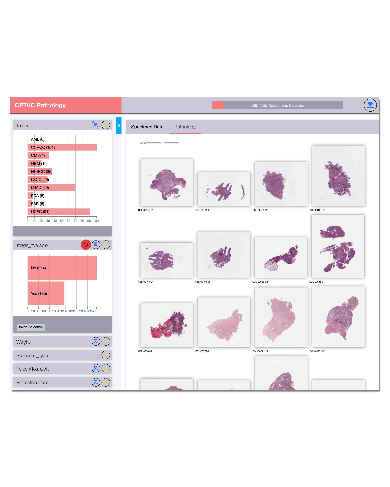

DataScope
Create Interactive Dashboards for Biomedical Data Exploration Without any Coding
Create Interactive Dashboards for Biomedical Data Exploration Without any Coding
Create dashboards using a declarative specification (i.e. No coding required)
Data is presented as linked coordinated views — as you filter on one attribute, you will see changes propogate across the other attributes
Scalable to large hetrogeneous distributed datasets. This is possible through a mix of server-side cross-filtering, compressed encoding of data, and some other optimizations
DataScope is extensible and can be templated, making it easy to integrated in existing apps, and add new visualizations
Provide users with a graphic view of an attribute or a quantitative view that summarizes the data
This instance provides access to an integration of digital patholgy data, and linked clinical data from the NCI Clinical Proteomic Tumor Analysis Consortium (CPTAC) project
Step 1. Identify the source of the data by creating a DataSource.json Supported data sources include CSV & JSON files on filesystem, REST APIs, and Databases over ODBC connections.
Step 2. Describe the data. Here you define the attributes that you want on your dashboard; whether they are integers, floats, enumerated values etc. You also indicate whether an attribute will be used as a linked filter, or is being used for display only. This is done in DataDescription.json
Step 3. Describe how you want to visualize your attributes using DataScopes declerative grammar. This is done in Visualization.json
NOTE: We are currently updating DataScope so you may be using an earlier version that requires two files to describe the visualizations. As always the instructions on the repo are current.